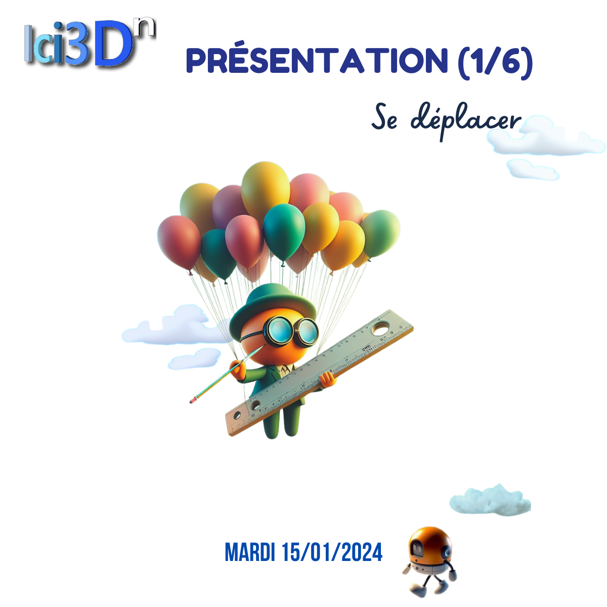

Ici3Dn est constitué de modules fonctionnels qui sont chargés en mémoire lors de l'exécution pour rendre disponibles des fonctions et des interfaces 2D associées.
Les exigences en matière de déplacement et d'interaction varient et nécessitent des interfaces différentes. Grâce à Ici3Dn, il est possible de créer plusieurs interfaces à l'intérieur d'une même application. Vous pouvez aisément basculer d'une interface à une autre en fonction de vos besoins.
Dans la vidéo ci-dessous, vous pouvez observer la fonctionnalité de déplacement et d'interaction de l'utilisateur dans un environnement 3D.
Cyril